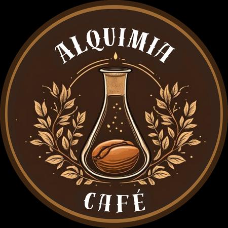

✳
BURBUJAS, FRUTA Y ALQUIMIA
Sodas italianas.
¿Aún no las conoces? Combinan agua con gas y jarabe de sabor. Son frías, frutales y burbujeantes: una opción refrescante para cambiarle al café.

ALQUIMIACAFÉ¿Aún no las conoces? Combinan agua con gas y jarabe de sabor. Son frías, frutales y burbujeantes: una opción refrescante para cambiarle al café.